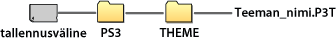

Asetukset > Teema-asetukset
Teema-asetukset
Voit mukauttaa XMB™:tä muuttamalla esimerkiksi taustakuvan tai näyttötekstien kirjasimen asetuksia.
Teema
Voit mukauttaa rakenneosia, esimerkiksi XMB™-näytössä näkyviä kuvakkeita tai taustaa, säätämällä asetuksia. Teemaa voi muuttaa jollakin seuraavista tavoista.
Esiasennetun teeman valitseminen
Valitse teema, joka on esiasennettu PS3™-järjestelmään.
Teeman lataaminen PS3™-järjestelmään
Kun lataat teeman PlayStation®Storesta ( ) tai käyttämällä Internet-selainta (
) tai käyttämällä Internet-selainta ( ), PS3™-järjestelmä asentaa teeman automaattisesti, kun lataaminen on valmis.
), PS3™-järjestelmä asentaa teeman automaattisesti, kun lataaminen on valmis.
Teeman lataaminen pelilevyltä tai ostetusta Blu-ray Disc -video-ohjelmasta (BD-ROM).
Jos haluat asentaa teematiedoston levyltä, valitse kohdasta  (Pelit) -kohdasta
(Pelit) -kohdasta  -kuvake ja valitse sitten asennettava teematiedosto. Asennuksen päätyttyä teema otetaan automaattisesti käyttöön järjestelmäteemana.
-kuvake ja valitse sitten asennettava teematiedosto. Asennuksen päätyttyä teema otetaan automaattisesti käyttöön järjestelmäteemana.
Teeman luominen tai lataaminen tietokoneella
Kun lataat teeman verkkosivustosta tai luot sen tietokoneella, tee tallennusvälineeseen uusi kansio nimeltä [PS3] - [THEME] ja tallenna teema siihen. Teematiedostot on tallennettava tiedostotunnisteella [.P3T].

Kun haluat tallentaa teeman PS3™-järjestelmän kiintolevylle, kytke teeman sisältävä tallennusväline järjestelmään ja valitse sitten  (Asetukset) >
(Asetukset) >  (Teema-asetukset) > [Teema] > [Asenna].
(Teema-asetukset) > [Teema] > [Asenna].
Vihjeitä
- Teematiedostoon kuulumaton kuvake korvataan teematiedoston kuvakkeella tai jätetään XMB™-näytön oletuskuvakkeeksi.
- Jos teematiedosto sisältää useita taustoja, teeman tausta vaihtuu epäsäännöllisin väliajoin.
- Voit hankkia tietokoneohjelman, jonka avulla voit luoda omia teematiedostoja PS3™-järjestelmää varten. (Tähän tarvitaan myös erikseen hankittu ohjelma, jolla voidaan luoda kuvia.) Lisätietoja saat oman alueen SCE-sivustossa.
- Tallennusvälineen käyttäminen saattaa edellyttää USB-sovitinta (lisävaruste) joissakin PS3™-malleissa.
Teemojen poistaminen
Valitse poistettava teema, paina  -näppäintä ja valitse sitten [Poista].
-näppäintä ja valitse sitten [Poista].
Väri
Voit määrittää XMB™-näytön taustavärin.
| Alkuperäinen | Ota alkuperäinen taustaväri käyttöön. |
|---|---|
| (väri / värivalikoima) | Voit ottaa valitun värin käyttöön taustavärinä. |
Tausta
Voit määrittää teemassa käytetyn taustan tai taustakuvaksi valitun kuvan valitsemalla XMB™-näytön taustaksi asetuksen  (Kuvat).
(Kuvat).
| Kirkkaus | Voit muuttaa taustan kirkkautta. |
|---|---|
| Alkuperäinen | Ota alkuperäinen teema käyttöön. |
| Classic | Ota [Classic]-teema käyttöön. |
| (teeman nimi) | Voit ottaa käyttöön teeman taustan, joka valittiin kohdassa [Teema]. |
| Taustakuva | Määritä taustaksi kuva, joka valittiin taustakuvaksi kohdassa (Kuvat). |
Kirjasin
Valitse  (Ystävät) -valikon XMB™-näytössä ja viesteissä käytettävä fontti. Tätä asetusta ei voi valita, jos järjestelmän kieleksi on valittu korea, yksinkertaistettu kiina tai perinteinen kiina.
(Ystävät) -valikon XMB™-näytössä ja viesteissä käytettävä fontti. Tätä asetusta ei voi valita, jos järjestelmän kieleksi on valittu korea, yksinkertaistettu kiina tai perinteinen kiina.
Vihje
Valittavissa olevat fontin määräytyvät käytössä olevan järjestelmäkielen mukaan.